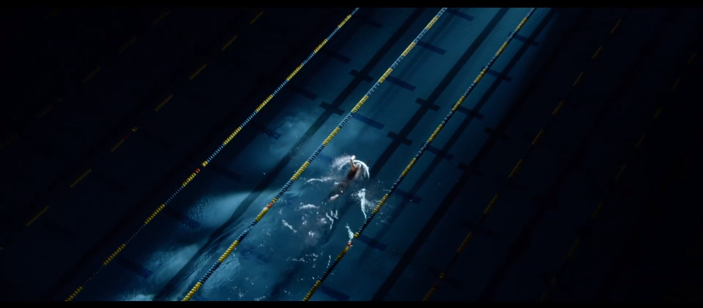
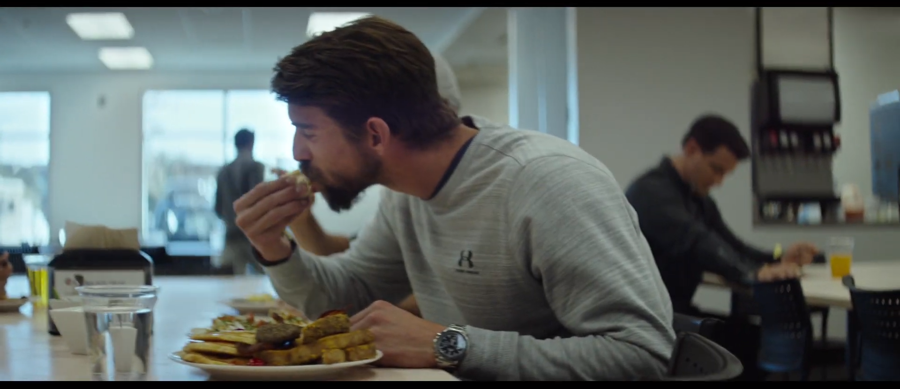
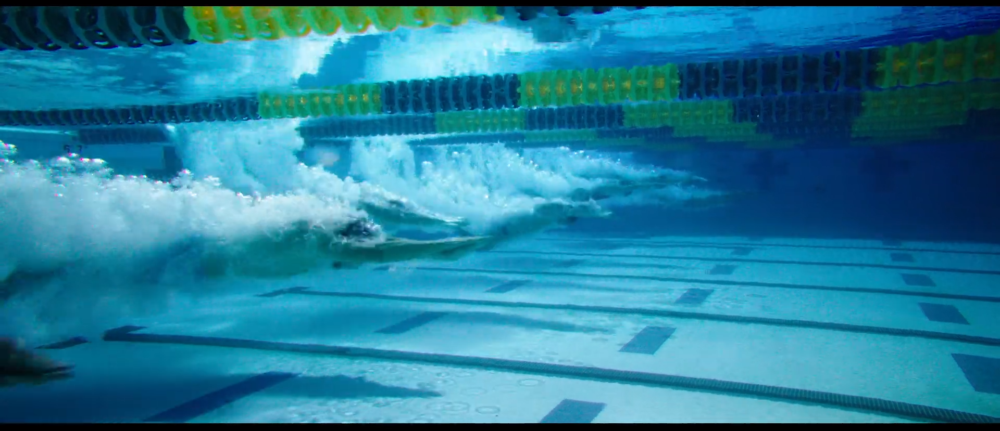

그랬던 그가 2016년 은퇴를 번복하며 국가대표로 복귀 소식을 알렸을 때 사람들의 반응은 냉담했다. 나빠질대로 나빠진 이미지의 영향도
있었지만, 그의 나이도 전성기를 지난 시점이었기 때문이었다.


하지만 언더아머는 그런 '마이클 펠프스'에게 먼저 손을 내밀어
그의 헌정 광고를 제작하였고, 올림픽 전에 온에어 하였다.
그리고 소름 돋게도 마이클 펠프스는 그 해 자신의 22번째 금메달을 손에 쥐었다.
마이클 펠프스의 힘든 여정과 노력을 영화처럼 그려낸 광고 영상과 브랜드와 드라마틱한 모델의 스토리가 잘 어우러진 광고이다.